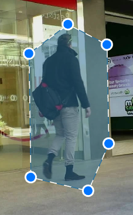
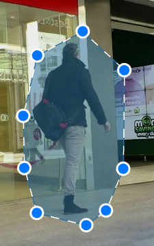
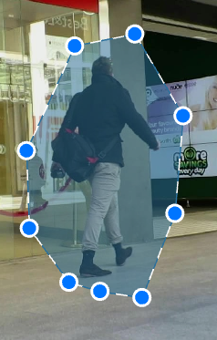
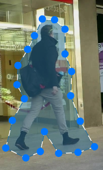
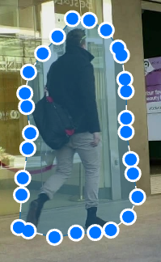

<div>
    <sly-field title="Shape Complexity"
               description="Shape Comlexity \n uniform \n greedily">
        <el-select v-model="state.shapeComplexity" placeholder="Select">
            <el-option key="greedily" label="Greedily" value="greedily"></el-option>
            <el-option key="uniform" label="Uniform" value="uniform"></el-option>
        </el-select>
        <el-collapse v-model="activeNames" @change="handleChange">
            <el-collapse-item title="Greedy algorithm" name="1">
                <el-carousel height="150px">
                    <el-carousel-item>
                        
                    </el-carousel-item>
                    <el-carousel-item>
                        
                    </el-carousel-item>
                    <el-carousel-item>
                        
                    </el-carousel-item>
                </el-carousel>
                <div>Each new polygon will include no more points than the largest of the start or end frames if the number of points for a polygon on the start and end frames varies.</div>
                <div>Small polygons respond well to the method, but because there aren't many points, polygons may begin to rotate.</div>
            </el-collapse-item>
            <el-collapse-item title="Uniform algorithm" name="2">
                <el-carousel height="150px">
                    <el-carousel-item>
                        
                    </el-carousel-item>
                    <el-carousel-item>
                        
                    </el-carousel-item>
                    <el-carousel-item>
                        
                    </el-carousel-item>
                </el-carousel>
                <div>The total number of points on the start and end polygons increases until it reaches the least common multiple of those points.</div>
                <div>On the sides, new points are distributed uniformly. Some points can be automatically eliminated after interpolation.</div>
            </el-collapse-item>
        </el-collapse>
    </sly-field>
    
</div>